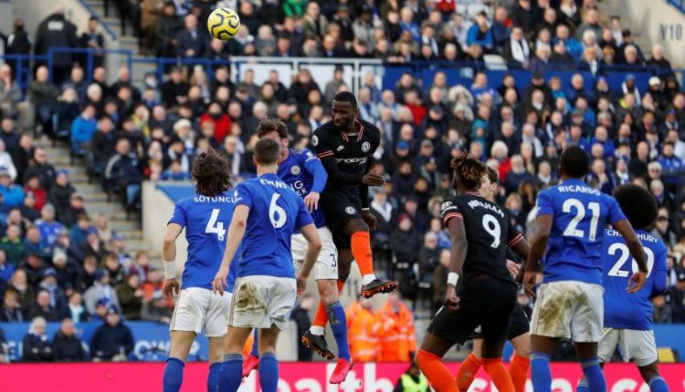

Footboll Bota
E bujshme/ Southampton do të ndryshojë presidentin dhe vjen biznesmeni serb me 100 milion paund, mund t’i fitojë zemrën tifozëve me…Armando Brojën
Te Southampton duket se do të ketë ndryshime të mëdha në këtë periudhë. Këtu nuk po flasim vetëm për lëvizjet e lojtarëve në merkato, por edhe në hierarki. Gao Jisheng, presidenti i skuadrës mund të largohet dhe të pranojë ofertën e biznesemenit me origjinë nga Serbia, Dragan Solak. Ky i fundit ka ofruar rreth 100 milionë paund dhe sipas raportimeve të mediave është shumë pranë arritjes së marrëveshjes dhe zyrtarizimit të saj. Një lëvizje që mund të ndikonte edhe në vazhdimësinë e Armando Brojës.Sigurisht, jo duke e parë në këndvështrimin politik, por për të dërguar një ofertë tunduese te Chelsea për blerjen e kartonit pasi kjo është dëshira e të gjithë tifozëve të Southampton. Një lëvizje e tillë do të bënte që Dragan Solak të fitonte menjëherë zemrën e tyre.

Kaos total në Angli, klubi i Premier Ligës i dërgon letër Federatës, janë me 9 lojtarë në dispozicion
Situata e krijuar nga Covid-19 është një kaos i vërtetë për futbollin. Shifrat e të infektuarve në Angli po rriten dita-ditës dhe së fundmi e ka pësuar Leiçesteri. Gëzimi i madh pas kualifikimit me rezultatin 4-1 në FA Cup shpejt do i linte vendin mërzisë.Një numër i lartë futbollistësh rezultuan pozitiv me Koronavirus dhe duke bashkëngjitur problemet me dëmtimet bën që “dhelprat” të mos kenë në dispozicion plot 16 lojtarë. Me vetëm 9 futbollistë në dispozicion, Leiçesteri e ka të pamundur të krijojë një ekip për të zhvilluar ndeshje, prandaj i ka dërguar letër Federatës për të shtyrë takimin e radhës. Mbetet për tu parë vendimi që do të merret, duke qenë se në këtë kalendar të ngjeshur është e vështirë të gjenden data të lira për të zëvendësuar sfidat e pazhvilluara.

Zbehet pista angleze për Vedat Muriqin, Lacio ka plane të tjera për sulmuesin shqiptar
Largimi i Vedat Muriqit nga Lacio duket i pashmangshëm. Sulmuesi shqiptar rezultoi një basti i humbur i Igli Tares, pasi në një sezon e gjysmë ende nuk ka dëshmuar aftësitë e tij në Itali. “Pirati” dëshiron rikthimin te Fenerbahçe, megjithëse oferta e vetme ka ardhur nga tjetërkund.Hull Siti ka kërkuar shërbimet e Muriqit, ndërsa ky i fundit ka vendosur të jetë i gatshëm për të pranuar të luajë në Championship. Por pista angleze është zbehur ndjeshëm. Hull Siti synon huazimin me të drejtë blerje në fund të sezonit, ndërsa nga ana tjetër Lotito ka plane të tjera dhe kërkon ta shesë që këtë muaj sulmuesin shqiptar.
“Jemi ekip i çuditshëm”, Tare: Më shumë jam ballafaquar me skuadrën se sa me djalin tim 18-vjeçar
Igli Tare ka folur për mikrofonin e “DAZN“-it përpara fillimit të sfidës së sotme kundër Interit. Drejtori sportiv shqiptar është shprehur se Lacio e këtij sezoni është një skuadër e çuditshme, pasi luhatet mes fitoreve mjaft të bukura dhe humbjeve që të hutojnë.“Në këto 4 muaj kam pasur më shumë ballafaqime me skuadrën se sa me djalin tim 18-vjeçar. Ka pak për të folur, ne jemi një ekip i çuditshëm, bëjmë lojëra mbresëlënëse dhe të tjera që të lënë të hutuar. Shihni edhe të fundit në shtëpi që jemi mundur me dy gola. Situata të tilla ka pasur edhe në të kaluarën, duhet të qëndrojmë të qetë dhe të analizojmë”, ka thënë Igli Tare.
Champions League luhet si asnjëherë me parë, UEFA publikon kalendarin e sforcuar nga Kupa e Botës
Fundi i këtij viti pret Kupën e Botës, që për herë të parë do të zhvillohet në dimër. Diçka e tillë ka bërë që futbolli europian të ndryshojë kalendarin për t’ju përshtatur turnout më madhor për Kombëtaret. Në këto kushte UEFA ka përshtatur kalendarin e saj për Champions League, që sezonin e ardhshëm do të zhvillohet ndryshe nga herët e tjera. E detyruar nga Kupa e Botës, faza e grupeve të kompeticionit më të rëndësishëm për klube do të përfundojë më 2 nëntor. Shorti për këtë fazë do të mbahet më 25 gusht, ndërsa përballja e parë do të luhet më 6 shtator 2022.
Titullari më i ri që debutoi me asist, ky është 17-vjeçari që luajti me Chelsea-n e Tuchel
17 vjeçari Lewis Hall ka plotësuar ëndrrën e tij duke debutuar me skuadrën e parë të Chelseat. Hall arriti të lërë gjurmën e tij në ndeshjen ndaj Chesterfield, ku ia doli të dhurojë një asist. Gjithashtu djaloshi theu një rekord historik në skuadrën e “bluve”, teksa bëhet lojtari më i ri që debuton me fanellën e Chelsea.Në intervistën pas ndeshjes, Leëis Hall u shpreh mjaft i lumtur për këtë sukses. “Është një ëndërr e bërë realitet. Është diçka për të cilën kam punuar që në fëmijëri. Dhe ja dola sot… Më duhet t’i falënderoj të gjithë. Familjen time, menaxherin, fansat që më bëjnë të ndihem shumë mirë.Unë i kam arritur synimet e mia për këtë sezon, madje i kam tejkaluar. Kur të kthehem në shtëpi, do të më duhet të kaloj disa ditë për të marrë veten dhe të mendoj se çfarë do të ndodhë më pas.”- u shpreh mjaft i lumtur djaloshi 17 vjeçar.